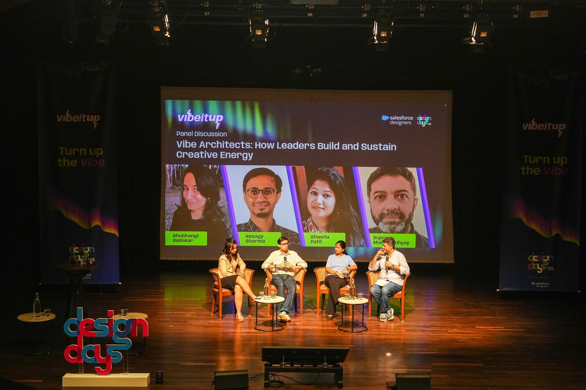
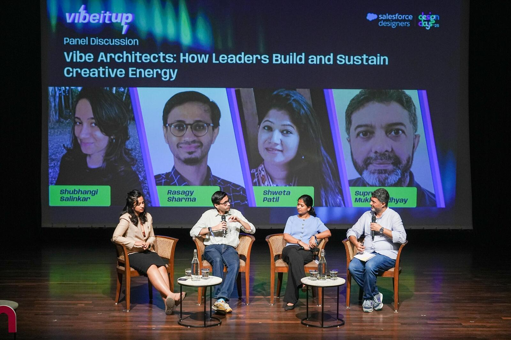
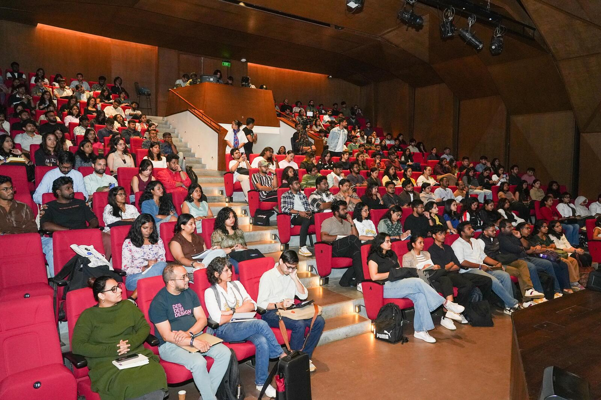
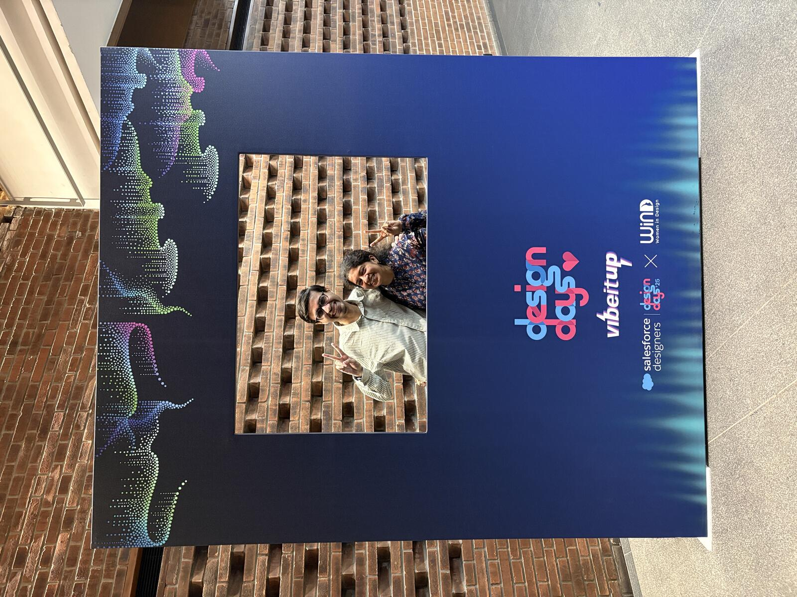

I was invited to join a panel discussion at Design Days 2025 in Bangalore, organized by Salesforce. The panel was on how design leaders define, build & nurture culture, and inevitably discussed how AI is changing the way we work.

Design Days is an annual design event held by Salesforce, with an interesting hybrid & cross-city schedule. This year, it was held in BIC, Bengaluru, along with parallel editions in Hyderabad & Singapore.
I joined some inspiring folks from the industry in the panel:
- Shubhangi Salinkar, Senior Design Manager at Adobe (Ex-Linkedin & Microsoft)
- Shweta Patil, UX Director at Salesforce (Ex-Symantec & Microsoft)
- Host: Supreo Mukhopadhyay, Principal Product Designer at Salesforce.

I spoke in the panel about:
- How my understanding of culture evolved from perks & policies to how people behave comfortably.
- How I value both the ability to ask tough questions by employees & the vulnerability & honesty of leaders to answer these well.
- How culture can not be merely defined by a leader, but must be driven by the team to sustain & scale.
We inevitably ended on the topic of AI replacing designers. More on that soon.

I enjoyed listening to some great speakers and sketchnoting some of their talks.

I also enjoyed hanging out with a bunch of familiar faces from Salesforce, NID & more, like Soo, Shweta, Kenneth, Shefali & Juneza!